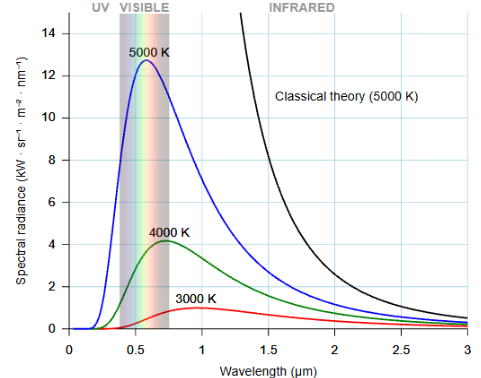
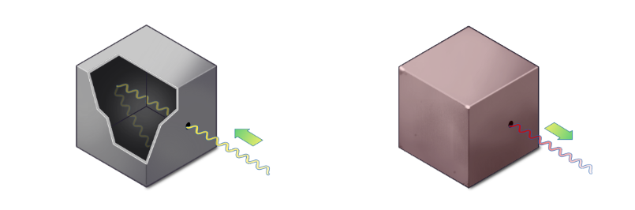
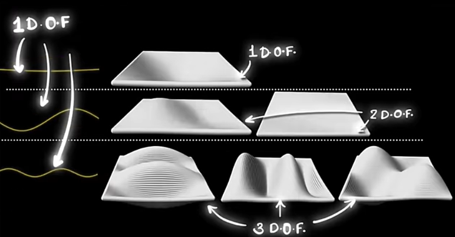

The answer to why hot things glow lies in something called blackbody radiation.
A blackbody is a body that absorbs all incoming electromagnetic radiation. Because it has temperature, it also emits electromagnetic radiation determined only by its temperature. It doesn't reflect or transmit anything. When it emits that energy back, we call it radiation.
Not all real objects behave this perfectly, so we have a spectrum defined by emissivity — a number that expresses how close a real object's behaviour is to a perfect blackbody:
Radiation is energy leaving the body. Everything that has temperature radiates — because atoms jiggle, and jiggling charges create a changing electromagnetic field. And a changing EM field carries energy outward as waves.
This is different from the other two ways heat can travel. Conduction requires direct contact — atoms bumping into each other. Convection requires a fluid or gas to carry the heat. Radiation needs nothing — it travels through complete vacuum at the speed of light.
That's how the Sun's heat reaches us across 150 million kilometres of empty space.
The power emitted by a blackbody is described by the Stefan-Boltzmann law:
Notice the T⁴ — temperature has an enormous effect. Double the temperature, and the emitted power increases by 16 times.
The y-axis tells us how much radiation is emitted. The x-axis shows at which wavelengths. Each curve represents one object at one constant temperature.

We see hot things glow when enough of their radiation falls inside the visible range. Cool objects radiate too — but in infrared, which our eyes can't detect. Push the temperature high enough, and the peak shifts into visible light — first red, then orange, then white.
That's the core answer. But there's a deeper question hiding underneath it: why does the curve have that shape at all? Classical physics tried to answer this — and failed spectacularly.
Classical physics assumed each degree of freedom gets an equal share of energy. Here's what that means:
A degree of freedom is just a different way energy can be stored. Think of it as a slot where energy can sit. In our box, each possible wave pattern is one such slot — and we call it a mode.
Since higher-frequency waves are shorter, more standing-wave patterns can fit inside the 3D cavity. This means the number of possible modes increases rapidly with frequency.
Scientists studied this by taking a box with a small hole, illuminating it, and trapping light inside. The hole barely lets anything escape — so it behaves like a blackbody. Inside, light bounces around in every possible mode simultaneously.

Classical physics said: each mode gets equal energy. But since there are infinitely many high-frequency modes — and each gets some energy — the total energy becomes infinite. Any hot object should instantly blast out enormous amounts of UV radiation.

Obviously, that doesn't happen. This failure was called the ultraviolet catastrophe.
Planck fixed it in 1900 with one radical assumption: what if energy doesn't flow freely, but comes in discrete packets?
He proposed:
So high-frequency modes don't just need some energy — they need a large packet to create that wave pattern at all. (Here, "activate" means supplying enough energy to actually create the pattern — without it, the pattern simply never forms.) And the heated body has a limited amount of energy to distribute. High-frequency modes require larger energy packets, so at ordinary temperatures most of them are rarely excited. That is why the curve eventually falls instead of growing forever.
- Low frequency → cheap packets → most wave patterns form → curve rises
- High frequency → expensive packets → most wave patterns never form → curve falls
- In between → the peak
Planck thought this was just a mathematical trick. It wasn't. Energy genuinely comes in packets. That assumption accidentally gave birth to quantum mechanics.
As temperature increases, the peak of the emission curve shifts toward shorter wavelengths — into the visible range. That's why hot things glow. The wavelength of that peak is given by Wien's displacement law:
1. Did you know you can tell whether a star is hot or cool just by looking at its color?
Hotter star → smaller λmax → peak shifts toward blue/violet → star looks bluish
Cooler star → larger λmax → peak shifts toward red → star looks reddish
No telescope needed. Just look up.
2. You've probably seen infrared camera footage where humans glow in red and orange. But wait — earlier we said red means cooler in stars. So why does red mean hot in cameras?
Because they have nothing to do with each other. Humans are ~36°C — nowhere near hot enough to emit visible light. Infrared cameras detect the infrared radiation we emit, then assign colors to represent intensity. Red means more radiation, blue and green less. These colors are invented by the camera — a visual map, not reality.
Star colors are completely real. A red star genuinely emits more red light. A blue star genuinely emits more blue light. That's blackbody radiation — temperature physically shifts the peak wavelength into those colors.
One more thing: infrared and thermal cameras aren't the same. An infrared camera measures infrared radiation directly. A thermal camera goes further — it converts that measurement to a temperature value using a physics formula, then visualizes it with colors. First measures IR, then interprets it.
These are the videos that helped me understand this. If something felt unclear, they might help you too: